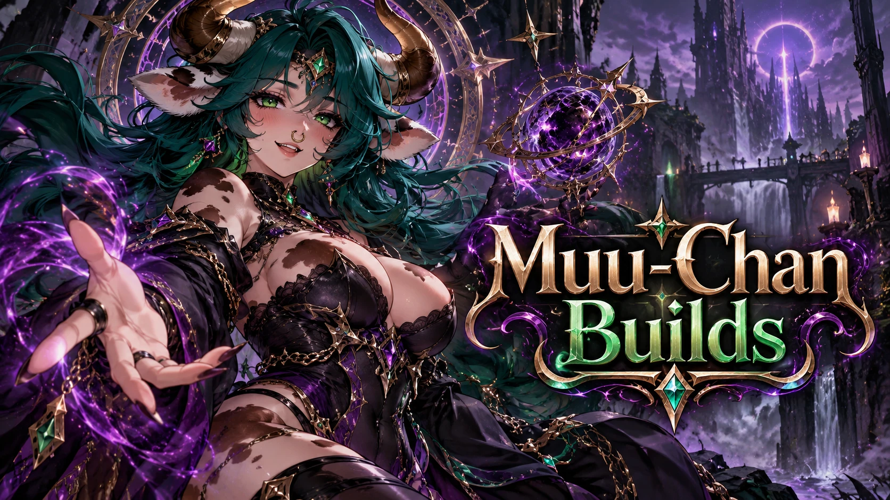

<!doctype html>
<html lang="pt-BR">
<head>
<meta charset="utf-8">
<meta name="viewport" content="width=device-width, initial-scale=1, viewport-fit=cover">
<title>Muu-chan Builds TL</title>
<meta name="theme-color" content="#0f0d17">
<meta name="description" content="Otimizador de build de Throne and Liberty: retorno decrescente de cada stat e simulação de trocas.">
<link rel="manifest" href="manifest.webmanifest">
<link rel="icon" href="icons/favicon-64.png" type="image/png">
<link rel="apple-touch-icon" href="icons/icon-192.png">
<link rel="preconnect" href="https://fonts.googleapis.com">
<link rel="stylesheet" href="https://fonts.googleapis.com/css2?family=Barlow+Condensed:wght@600;700&display=swap">
<link rel="stylesheet" href="css/app.css">
</head>
<body>
<div class="app">
  <aside class="side">
    <div class="brand">
      
      <div><b>Muu-chan Builds</b><small>TL · Throne and Liberty</small></div>
    </div>
    <nav class="nav" id="nav" aria-label="Seções"></nav>
    <div class="grow"></div>
    <p class="muted" style="font-size:12px;margin:0 8px">Aproximação por engenharia reversa. Não garante o número exato do jogo.</p>
  </aside>
  <main class="main" id="view"></main>
</div>
<nav class="bnav" id="bnav" aria-label="Seções"></nav>
<dialog id="sheet" aria-label="Alvo e foco"></dialog>
<script src="js/engine.js"></script>
<script src="js/ocr.js"></script>
<script src="js/app.js"></script>
</body>
</html>
